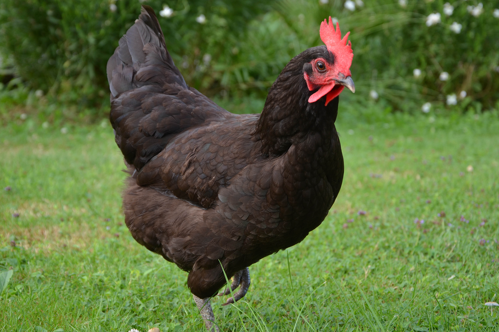

As the Cat and the Fox were once talking politics together, in the middle of a forest, Reynard said, let things turn out ever so bad, he did not care, for he had a thousand tricks for them yet, before they should hurt him; but pray, says he, Mrs Puss, suppose there should be an invasion, what course do you design to take? Nay, says the Cat, I have but one shift for it, and if that won’t do, I am undone. I am sorry for you, replies Reynard, with all my heart, and would gladly furnish you with one or two of mine; but indeed neighbour, as times go, it is not good to trust, we must even be every one for himself, as the saying is, and so your humble servant. These words were scarcely out of his mouth, when they were alarmed with a pack of hounds, that came upon them in full cry. The Cat, by the help of her single shift, ran up a tree108 and sat securely among the branches, whence she beheld Reynard, who had not been able to get out of sight, overtaken with his thousand tricks, and torn into as many pieces by the Dogs, which had surrounded him.
The cock and the jewel

A gallant young Cock, in company with his mistresses, raking upon a dung-hill for something to entertain them with, happened to scratch up a Jewel. He knew what it was well enough, for it sparkled with an exceeding bright lustre; but not knowing what to do with it, he shrugged up his wings, shook his head, and putting on a grimace, expressed himself to this purpose: Indeed, you are a very fine thing; but I know not any business you have here. I make no scruple of declaring, that my taste lies quite another way; and I had rather have one grain of dear, delicious barley, than all the Jewels under the sun.
The man and his goose
A certain Man had a Goose, which laid him a golden egg every day. But not contented with this, which rather increased than abated his avarice, he was resolved to kill the Goose, and cut up her belly, that by so doing he might come at the inexhaustible treasure which he fancied she had within her. He did so, and to his great sorrow and disappointment, found nothing.